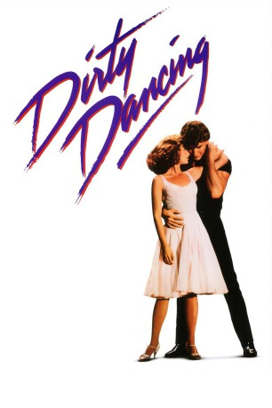
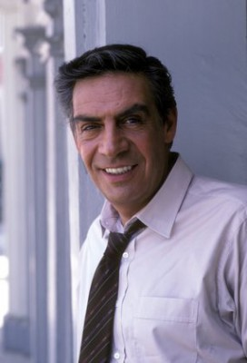
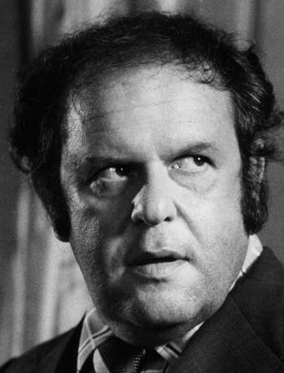

#1659 Dirty Dancing
Auszeichnungen: 1 Oscars gewonnen 1 GoldenGlobes gewonnen
 
 IMDB-Wertung: 6.9 / 10
IMDB-Wertung: 6.9 / 10  Metascore: 65
Metascore: 65 
Francis „Baby“ Houseman ist ein Mädchen aus reichem Hause. Sie und ihre Familie verbringen die Sommerferien 1963 in Max Kellermans Hotel, wo Baby dem feschen Tanzlehrer Johnny Castle begegnet - seine Show lässt auch in ihr die Lust steigen, zu tanzen. Doch der Mambogott hat nichts übrig für verwöhnte Mädels aus der Oberschicht. Dann aber fällt seine Tanzpartnerin Penny wegen einer ungewollten Schwangerschaft aus und Baby bietet ihre Hilfe an. Nun soll sie im Schnelldurchgang die komplizierten Figuren des Mambos lernen. Das Paar kommt sich auch emotional schnell näher, muss auf seinem Weg aber diversen Problemen trotzen: eine Reihe von Diebstählen und die goldene Hotelregel, dass Personal und Gäste durch eine unsichtbare Linie voneinander getrennt bleiben müssen, machen Baby und Johnny zu schaffen...
Jahr: 1987
Dauer: 100 Minuten
FSK: 12
Land: USA Studio: Vestron PicturesTonspuren:
Untertitel:
Auflösung: 1080p (1920x1080) Größe: 6277 MB
Genre: Drama, Musik, Liebe
Regisseur: Emile Ardolino
Drehbuch: Eleanor Bergstein
Soundtrack: John Morris
Darsteller:
 Jennifer Grey als Baby Houseman
Jennifer Grey als Baby Houseman Patrick Swayze als Johnny Castle
Patrick Swayze als Johnny Castle-  Jerry Orbach als Jake Houseman
- Cynthia Rhodes als Penny Johnson
-  Jack Weston als Max Kellerman
- Jane Brucker als Lisa Houseman
- Kelly Bishop als Marjorie Houseman
- Lonny Price als Neil Kellerman
 Neal Jones als Billy Kostecki
Neal Jones als Billy Kostecki Wayne Knight als Stan
Wayne Knight als Stan- Antone Pagan als Staff Kid
- Heather Lea Gerdes als Dirty Dancer
- Clifford Watkins als Tito's Band
 Darren W. Conrad als Dirty Dancer , uncredited
Darren W. Conrad als Dirty Dancer , uncredited- Max Cantor als Robbie Gould
- Charles 'Honi' Coles als Tito Suarez
- 'Cousin Brucie' Morrow als Magician
- Paula Trueman als Mrs. Schumacher
- Alvin Myerovich als Mr. Schumacher
- Miranda Garrison als Vivian Pressman
- Garry Goodrow als Moe Pressman
- Thomas Cannold als Bus Boy
- M.R. Fletcher als Dirty Dancer
- Jesus Fuentes als Dirty Dancer
- Karen Getz als Dirty Dancer
- Andrew Charles Koch als Dirty Dancer
- D.A. Pauley als Dirty Dancer
- Doriana Sanchez als Dirty Dancer
- Jennifer Stahl als Dirty Dancer
- Jonathan Barnes als Tito's Band
- Dwyght Bryan als Tito's Band
- Tom Drake als Tito's Band
- John Gotz als Tito's Band
- Dwayne Malphus als Tito's Band
- Lori Janney als Young Woman Walking Lake , uncredited
- Karen Kaster als Dancer , uncredited
- Jonathan Reed als Hotel Guest / Dancer , uncredited
Datei: X:\2-Dilogie(A-F)\Dirty Dancing\Dirty Dancing (1987, FSK12, 1920x1080).mkv seit 31.07.2015
Festplatte: HD Collection-2(A-Z)-3(A-M)
 Alle Filme aus Gruppe '2-Dilogie(A-F)\Dirty Dancing'
Alle Filme aus Gruppe '2-Dilogie(A-F)\Dirty Dancing'